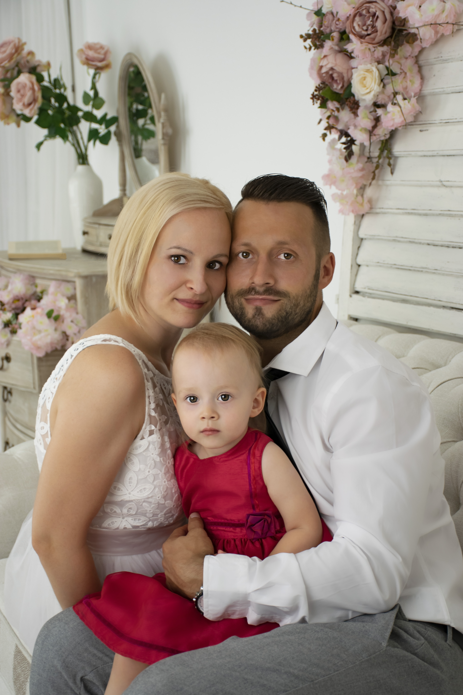
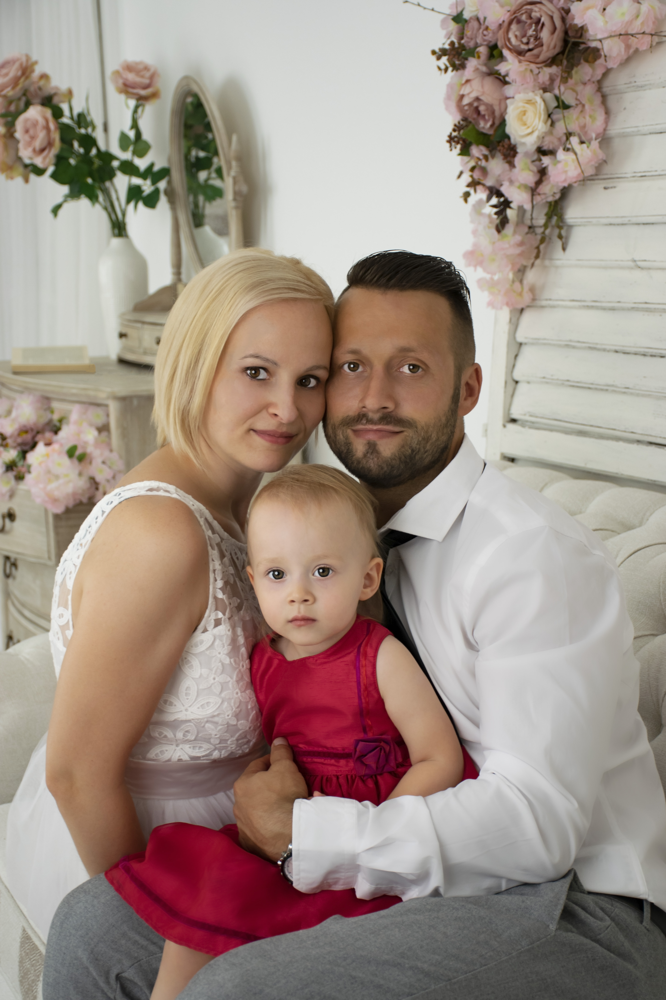

Családi fotózás
Nincs jobb a szép, közös képeknél, amit a családi fotózás alkalmával készítünk, és amiből árad a jókedv és harmónia.
Mindenki ezt a végeredményt várja, és ez a gondolat jár a fejébe, és mikor megérkeznek az anyukák, jönnek a mondatok, nem aludt az éjszaka, nő a foga, otthon maradt a fejpánt, és ezt egy nagyon stresszes dologként élik meg. Apukának nincs kedve az egészhez mert „imádja” a fotózást, anyuka ideges, jön a kérdés: “akkor miért jönnek”. Én is kérdezem miért idegeskedünk, ha mi azok vagyunk a gyermek is megérzi, és ha idegesek vagyunk változik bármi? Nem.
El kell engedni, és mindent megtenni, hogy kihozzuk a legtöbbet, jó kedvet teremtsük, figyelmet lekössük, és még a végén jó is sülhet ki, és apuka is azt mondja nem is volt rossz. Valamint talán nincs is jobb érzés visszanézni a képeket, amin mindenki rajta van.
 
